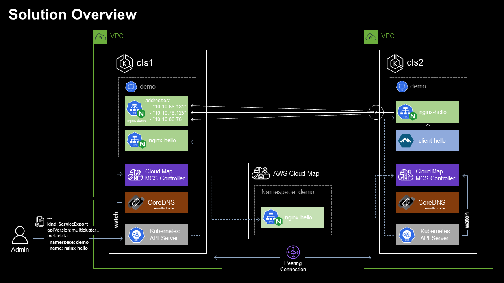
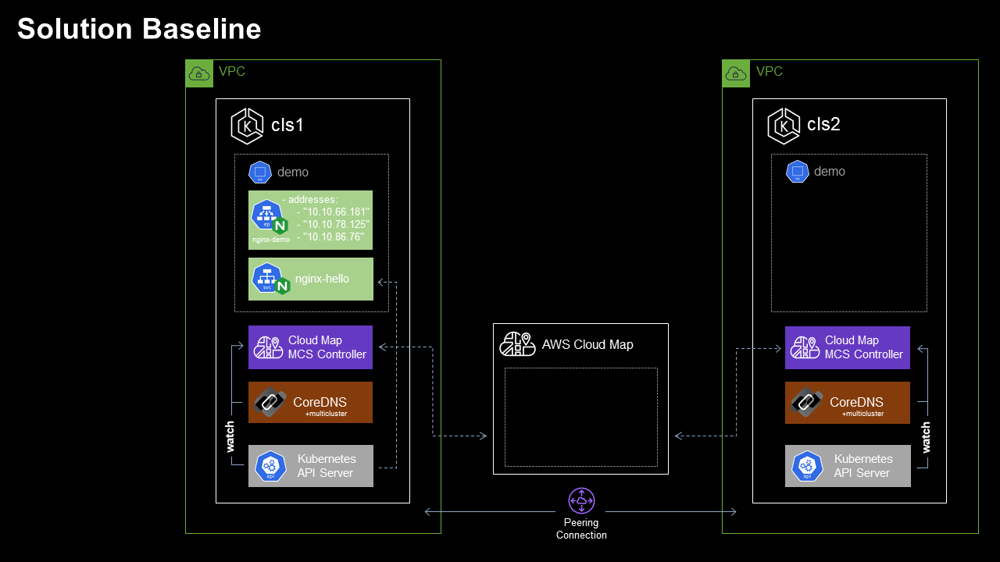
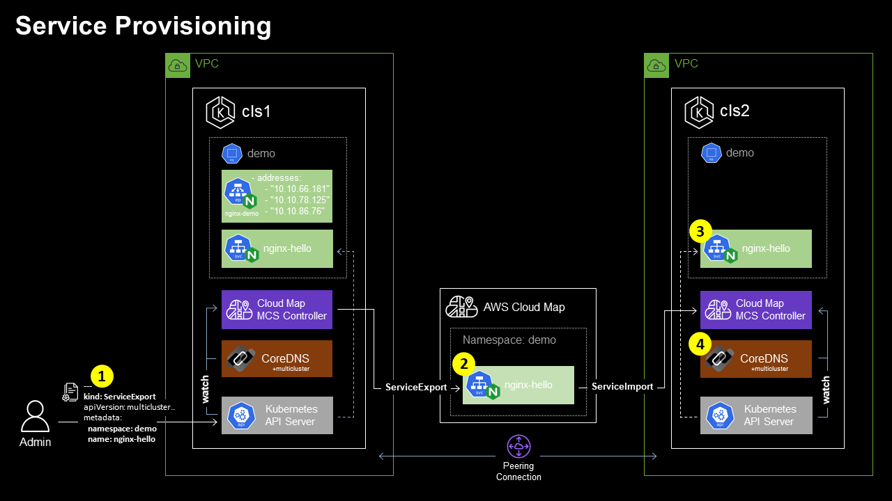
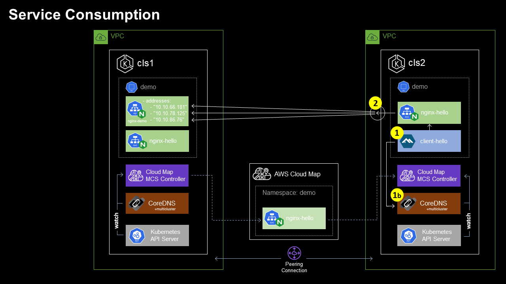

Introduction
Kubernetes, with it's implementation of the cluster construct has simplified the ability to schedule workloads across a collection of VMs or nodes. Declarative configuration, immutability, auto-scaling, and self healing have vastly simplified the paradigm of workload management within the cluster - which has enabled teams to move at increasing velocities.
As the rate of Kubernetes adoption continues to increase, there has been a corresponding increase in the number of use cases that require workloads to break through the perimeter of the single cluster construct. Requirements concerning workload location/proximity, isolation, and reliability have been the primary catalyst for the emergence of deployment scenarios where a single logical workload will span multiple Kubernetes clusters:
- Location based concerns include network latency requirements (e.g. bringing the application as close to users as possible), data gravity requirements (e.g. bringing elements of the application as close to fixed data sources as possible), and jurisdiction based requirements (e.g. data residency limitations imposed via governing bodies);
- Isolation based concerns include performance (e.g. reduction in "noisy-neighbor" influence in mixed workload clusters), environmental (e.g. by staged or sandboxed workload constructs such as "dev", "test", and "prod" environments), security (e.g. separating untrusted code or sensitive data), organisational (e.g. teams fall under different business units or management domains), and cost based (e.g. teams are subject to separate budgetary constraints);
- Reliability based concerns include blast radius and infrastructure diversity (e.g. preventing an application based or underlying infrastructure issue in one cluster or provider zone from impacting the entire solution), and scale based (e.g. the workload may outgrow a single cluster)

Multi-cluster application architectures tend to be designed to either be replicated in nature - with this pattern each participating cluster runs a full copy of each given application; or alternatively they implement more of a group-by-service pattern where the services of a single application or system are split or divided amongst multiple clusters.
When it comes to the configuration of Kubernetes (and the surrounding infrastructure) to support a given multi-cluster application architecture - the space has evolved over time to include a number of approaches. Implementations tend draw upon a combination of components at various levels of the stack, and generally speaking they also vary in terms of the "weight" or complexity of the implementation, number and scope of features offered, as well as the associated management overhead. In simple terms these approaches can be loosely grouped into two main categories:
- Network-centric approaches focus on network interconnection tooling to implement connectivity between clusters in order to facilitate cross-cluster application communication. The various network-centric approaches include those that are tightly coupled with the CNI (e.g. Cillium Mesh), as well as more CNI agnostic implementations such as Submariner and Skupper. Service mesh implementations also fall into the network-centric category, and these include Istio’s multi-cluster support, Linkerd service mirroring, Kuma from Kong, AWS App Mesh, and Consul’s mesh gateway. There are also various multi-cluster ingress approaches, as well as virtual-kubelet based approaches including Admiralty, Tensile-kube, and Liqo.
- Kubernetes-centric approaches focus on supporting and extending the core Kubernetes primitives in order to support multi-cluster use cases. These approaches fall under the stewardship of the Kubernetes Multicluster Special Interest Group whose charter is focused on designing, implementing, and maintaining API’s, tools, and documentation related to multi-cluster administration and application management. Subprojects include:
- kubefed (Kubernetes Cluster Federation) which implements a mechanism to coordinate the configuration of multiple Kubernetes clusters from a single set of APIs in a hosting cluster. kubefed is considered to be foundational for more complex multi-cluster use cases such as deploying multi-geo applications, and disaster recovery.
- work-api (Multi-Cluster Works API) aims to group a set of Kubernetes API resources to be applied to one or multiple clusters together as a concept of “work” or “workload” for the purpose of multi-cluster workload lifecycle mangement.
- mcs-api (Multi-cluster Services APIs) implements an API specification to extend the single-cluster bounded Kubernetes service concept to function across multiple clusters.
About the Multi-cluster Services API
Kubernetes' familiar Service object lets you discover and access services within the boundary of a single Kubernetes cluster. The mcs-api implements a Kubernetes-native extension to the Service API, extending the scope of the service resource concept beyond the cluster boundary - providing a mechanism to weave multiple clusters together using standard (and familiar) DNS based service discovery.
KEP-1645: Multi-Cluster Services API provides the formal description of the Multi Cluster Service API. KEP-1645 doesn't define a complete implementation - it serves to define how an implementation should behave.At the time of writing the mcs-api version is:
multicluster.k8s.io/v1alpha1
The primary deployment scenarios covered by the mcs-api include:
- Different services each deployed to separate clusters: I have 2 clusters, each running different services managed by different teams, where services from one team depend on services from the other team. I want to ensure that a service from one team can discover a service from the other team (via DNS resolving to VIP), regardless of the cluster that they reside in. In addition, I want to make sure that if the dependent service is migrated to another cluster, the dependee is not impacted.
- Single service deployed to multiple clusters: I have deployed my stateless service to multiple clusters for redundancy or scale. Now I want to propagate topologically-aware service endpoints (local, regional, global) to all clusters, so that other services in my clusters can access instances of this service in priority order based on availability and locality.
The mcs-api is able to support these use cases through the described properties of a ClusterSet, which is a group of clusters with a high degree of mutual trust and shared ownership that share services amongst themselves - along with two additional API objects: the ServiceExport and the ServiceImport.
Services are not visible to other clusters in the ClusterSet by default, they must be explicitly marked for export by the user. Creating a ServiceExport object for a given service specifies that the service should be exposed across all clusters in the ClusterSet. The mcs-api implementation (typically a controller) will automatically generate a corresponding ServiceImport object (which serves as the in-cluster representation of a multi-cluster service) in each importing cluster - for consumer workloads to be able to locate and consume the exported service.
DNS-based service discovery for ServiceImport objects is facilitated by the Kubernetes DNS-Based Multicluster Service Discovery Specification which extends the standard Kubernetes DNS paradigms by implementing records named by service and namespace for ServiceImport objects, but as differentiated from regular in-cluster DNS service names by using the special zone .clusterset.local. I.e. When a ServiceExport is created, this will cause a FQDN for the multi-cluster service to become available from within the ClusterSet. The domain name will be of the format <service>.<ns>.svc.clusterset.local.
AWS Cloud Map MCS Controller for Kubernetes
The AWS Cloud Map MCS Controller for Kubernetes (MCS-Controller) is an open source project that implements the multi-cluster services API specification.
The MCS-Controller is a controller that syncs services across clusters and makes them available for multi-cluster service discovery and connectivity. The implementation model is decentralized, and utilises AWS Cloud Map as registry for management and distribution of multi-cluster service data.
At the time of writing, the MCS-Controller release version is v0.3.0 which introduces new features including the ClusterProperty CRD, and support for headless services. Milestones are currently in place to bring the project up to v1.0 (GA), which will include full compliance with the mcs-api specification, support for multiple AWS accounts, and Cloud Map client-side traffic shaping.
AWS Cloud Map
AWS Cloud Map is a cloud resource discovery service that allows applications to discover web-based services via the AWS SDK, API calls, or DNS queries. Cloud Map is a fully managed service which eliminates the need to set up, update, and manage your own service discovery tools and software..
Tutorial
Overview
Let's consider a deployment scenario where we provision a Service into a single EKS cluster, then make the service available from within a second EKS cluster using the AWS Cloud Map MCS Controller.
This tutorial will take you through the end-end implementation of the solution as outlined herein, including a functional implementation of the AWS Cloud Map MCS Controller across x2 EKS clusters situated in separate VPCs.
Solution Baseline

In reference to the Solution Baseline diagram:
- We have x2 EKS clusters (Cluster 1 & Cluster 2), each deployed into separate VPCs within a single AWS region.
- Cluster 1 VPC CIDR: 10.10.0.0/16, Kubernetes service IPv4 CIDR: 172.20.0.0/16
- Cluster 2 VPC CIDR: 10.12.0.0/16, Kubernetes service IPv4 CIDR: 172.20.0.0/16
- VPC peering is configured to permit network connectivity between workloads within each cluster.
- The CoreDNS multicluster plugin is deployed to each cluster.
- The AWS Cloud Map MCS Controller for Kubernetes is deployed to each cluster.
- Clusters 1 & 2 are each configured as members of the same mcs-api
ClusterSet.- Cluster 1 mcs-api
ClusterSet: clusterset1,ClusterId: cls1. - Cluster 2 mcs-api
ClusterSet: clusterset1,ClusterId: cls2.
- Cluster 1 mcs-api
- Clusters 1 & 2 are both provisioned with the namespace
demo. - Cluster 1 has a
ClusterIPServicenginx-hellodeployed to thedemonamespace which frontends a x3 replica Nginx deploymentnginx-demo.- Service | nginx-hello: 172.20.150.33:80
- Endpoints | nginx-hello: 10.10.66.181:80,10.10.78.125:80,10.10.86.76:80
Service Provisioning
With the required dependencies in place, the admin user is able to create a ServiceExport object in Cluster 1 for the nginx-hello Service, such that the MCS-Controller implementation will automatically provision a corresponding ServiceImport in Cluster 2 for consumer workloads to be able to locate and consume the exported service.

In reference to the Service Provisioning diagram:
- The administrator submits the request to the Cluster 1 Kube API server for a
ServiceExportobject to be created for ClusterIP Servicenginx-helloin thedemoNamespace. - The MCS-Controller in Cluster 1, watching for
ServiceExportobject creation provisions a correspondingnginx-helloservice in the Cloud Mapdemonamespace. The Cloud Map service is provisioned with sufficient detail for the Service object and corresponding Endpoint Slice to be provisioned within additional clusters in theClusterSet. - The MCS-Controller in Cluster 2 responds to the creation of the
nginx-helloCloud Map Service by provisioning theServiceImportobject and correspondingEndpointSliceobjects via the Kube API Server. - The CoreDNS multicluster plugin, watching for
ServiceImportandEndpointSlicecreation provisions corresponding DNS records within the.clusterset.localzone.
Service Consumption

In reference to the Service Consumption diagram:
- The
client-hellopod in Cluster 2 needs to consume thenginx-helloservice, for which all Endpoints are deployed in Cluster 1. Theclient-hellopod requests the resource http://nginx-hello.demo.svc.clusterset.local:80. DNS based service discovery [1b] responds with the IP address of the localnginx-helloServiceExportServiceClusterSetIP. - Requests to the local
ClusterSetIPatnginx-hello.demo.svc.clusterset.localare proxied to the Endpoints located on Cluster 1.
Note: In accordance with the mcs-api specification, a multi-cluster service will be imported by all clusters in which the service's namespace exists, meaning that each exporting cluster will also import the corresponding multi-cluster service. As such, the
nginx-helloservice will also be accessible viaServiceExportServiceClusterSetIPon Cluster 1. Identical to Cluster 2, theServiceExportService is resolvable by name atnginx-hello.demo.svc.clusterset.local.
Implementation
Solution Baseline
To prepare your environment to match the Solution Baseline deployment scenario, the following prerequisites should be addressed.
Clone the aws-cloud-map-mcs-controller-for-k8s git repository
Sample configuration files will be used through the course of the tutorial, which have been made available in the aws-cloud-map-mcs-controller-for-k8s repository.
Clone the repository to the host from which you will be bootstrapping the clusters:
git clone https://github.com/aws/aws-cloud-map-mcs-controller-for-k8s.git
Note: All commands as provided should be run from the root directory of the cloned git repository.
Note: Certain values located within the provided configuration files have been configured for substitution with OS environment variables. Work instructions below will identify which environment variables should be set before issuing any commands which will depend on variable substitution.
Create EKS Clusters
x2 EKS clusters should be provisioned, each deployed into separate VPCs within a single AWS region.
- VPCs and clusters should be provisioned with non-overlapping CIDRs.
- For compatibility with the remainder of the tutorial, it is recommended that
eksctlbe used to provision the clusters and associated security configuration. By default, theeksctl create clustercommand will create a dedicated VPC.
Sample eksctl config file samples/eksctl-cluster.yaml has been provided:
- Environment variables AWS_REGION, CLUSTER_NAME, NODEGROUP_NAME, and VPC_CIDR should be configured. Example values have been provided in the below command reference - substitute values to suit your preference.
- Example VPC CIDRs match the values provided in the Baseline Configuration description.
Run the following commands to create clusters using eksctl.
Cluster 1:
export AWS_REGION=ap-southeast-2
export CLUSTER_NAME=cls1
export NODEGROUP_NAME=cls1-nodegroup1
export VPC_CIDR=10.10.0.0/16
envsubst < samples/eksctl-cluster.yaml | eksctl create cluster -f -
Cluster 2:
export AWS_REGION=ap-southeast-2
export CLUSTER_NAME=cls2
export NODEGROUP_NAME=cls2-nodegroup1
export VPC_CIDR=10.12.0.0/16
envsubst < samples/eksctl-cluster.yaml | eksctl create cluster -f -
Create VPC Peering Connection
VPC peering is required to permit network connectivity between workloads provisioned within each cluster.
- To create the VPC Peering connection, follow the instruction Create a VPC peering connection with another VPC in your account for guidance.
-
VPC route tables in each VPC require updating, follow the instruction Update your route tables for a VPC peering connection for guidance. For simplicity, it's recommended to configure route destinations as the IPv4 CIDR block of the peer VPC.
-
Security Groups require updating to permit cross-cluster network communication. EKS cluster security groups in each cluster should be updated to permit inbound traffic originating from external clusters. For simplicity, it's recommended the Cluster 1 & Cluster 2 EKS Cluster Security groups be updated to allow inbound traffic from the IPv4 CIDR block of the peer VPC.
The VPC Reachability Analyzer can be used to test and diagnose end-end connectivity between worker nodes within each cluster.
Enable EKS OIDC Provider
In order to map required Cloud Map AWS IAM permissions to the MCS-Controller Kubernetes service account, we need to enable the OpenID Connect (OIDC) identity provider in our EKS clusters using eksctl.
- Environment variables REGION and CLUSTERNAME should be configured.
Run the following commands to enable OIDC providers using eksctl.
Cluster 1:
export AWS_REGION=ap-southeast-2
export CLUSTER_NAME=cls1
eksctl utils associate-iam-oidc-provider \
--region $AWS_REGION \
--cluster $CLUSTER_NAME \
--approve
Cluster 2:
export AWS_REGION=ap-southeast-2
export CLUSTER_NAME=cls2
eksctl utils associate-iam-oidc-provider \
--region $AWS_REGION \
--cluster $CLUSTER_NAME \
--approve
Implement CoreDNS multicluster plugin
The CoreDNS multicluster plugin implements the Kubernetes DNS-Based Multicluster Service Discovery Specification which enables CoreDNS to lifecycle manage DNS records for ServiceImport objects. To enable the CoreDNS multicluster plugin within both EKS clusters, perform the following procedure.
Update CoreDNS RBAC
Run the following command against both clusters to update the system:coredns clusterrole to include access to additional multi-cluster API resources:
kubectl apply -f samples/coredns-clusterrole.yaml
Update the CoreDNS configmap
Run the following command against both clusters to update the default CoreDNS configmap to include the multicluster plugin directive, and clusterset.local zone:
kubectl apply -f samples/coredns-configmap.yaml
Update the CoreDNS deployment
Run the following command against both clusters to update the default CoreDNS deployment to use the container image ghcr.io/aws/aws-cloud-map-mcs-controller-for-k8s/coredns-multicluster/coredns:v1.8.6 - which includes the multicluster plugin:
kubectl apply -f samples/coredns-deployment.yaml
Install the aws-cloud-map-mcs-controller-for-k8s
Configure MCS-Controller RBAC
Before the Cloud Map MCS-Controller is installed, we will first pre-provision the controller Service Account, granting IAM access rights AWSCloudMapFullAccess to ensure that the MCS Controller can lifecycle manage Cloud Map resources.
- Environment variable CLUSTER_NAME should be configured.
Run the following commands to create the MCS-Controller namespace and service accounts in each cluster.
Note: Be sure to change the
kubectlcontext to the correct cluster before issuing commands.
Cluster 1:
export CLUSTER_NAME=cls1
kubectl create namespace cloud-map-mcs-system
eksctl create iamserviceaccount \
--cluster $CLUSTER_NAME \
--namespace cloud-map-mcs-system \
--name cloud-map-mcs-controller-manager \
--attach-policy-arn arn:aws:iam::aws:policy/AWSCloudMapFullAccess \
--override-existing-serviceaccounts \
--approve
Cluster 2:
export CLUSTER_NAME=cls2
kubectl create namespace cloud-map-mcs-system
eksctl create iamserviceaccount \
--cluster $CLUSTER_NAME \
--namespace cloud-map-mcs-system \
--name cloud-map-mcs-controller-manager \
--attach-policy-arn arn:aws:iam::aws:policy/AWSCloudMapFullAccess \
--override-existing-serviceaccounts \
--approve
Install the MCS-Controller
Now to install the MCS-Controller.
- Environment variable AWS_REGION should be configured.
Run the following command against both clusters to install the MCS-Controller latest release:
export AWS_REGION=ap-southeast-2
kubectl apply -k "github.com/aws/aws-cloud-map-mcs-controller-for-k8s/config/controller_install_release"
Assign mcs-api ClusterSet membership and Cluster identifier
To ensure that ServiceExport and ServiceImport objects propagate correctly between clusters, each cluster should be configured as a member of a single mcs-api ClusterSet (clusterset1 in our example deployment scenario), and should be assigned a unique mcs-api Cluster Id within the ClusterSet (cls1 & cls2 in our example deployment scenario).
- Environment variable CLUSTER_ID should be configured.
- Environment variable CLUSTERSET_ID should be configured.
Run the following commands to configure Cluster Id and ClusterSet membership.
Cluster 1:
export CLUSTER_ID=cls1
export CLUSTERSET_ID=clusterset1
envsubst < samples/mcsapi-clusterproperty.yaml | kubectl apply -f -
Cluster 2:
export CLUSTER_ID=cls2
export CLUSTERSET_ID=clusterset1
envsubst < samples/mcsapi-clusterproperty.yaml | kubectl apply -f -
Create nginx-hello Service
Now that the clusters, CoreDNS and the MCS-Controller have been configured, we can create the demo namespace in both clusters and implement the nginx-hello Service and associated Deployment into Cluster 1.
Run the following commands to prepare the demo environment on both clusters.
Note: be sure to change the
kubectlcontext to the correct cluster before issuing commands.
Cluster 1:
kubectl create namespace demo
kubectl apply -f samples/nginx-deployment.yaml
kubectl apply -f samples/nginx-service.yaml
Cluster 2:
kubectl create namespace demo
Service Provisioning
With the Solution Baseline in place, let's continue by implementing the Service Provisioning scenario. We'll create a ServiceExport object in Cluster 1 for the nginx-hello Service. This will trigger the Cluster 1 MCS-Controller to complete service provisioning and propagation into Cloud Map, and subsequent import and provisioning by the MCS-Controller in Cluster 2.
Create nginx-hello ServiceExport
Run the following command against Cluster 1 to to create the ServiceExport object for the nginx-hello Service:
kubectl apply -f \config\nginx-serviceexport.yaml
Verify nginx-hello ServiceExport
Let's verify the ServiceExport creation has succeeded, and that corresponding objects have been created in Cluster 1, Cloud Map, and Cluster 2.
Cluster 1
Inspecting the MCS-Controller logs in Cluster 1, we see that the controller has detected the ServiceExport object, and created the corresponding demo Namespace and nginx-hello Service in Cloud Map:
$ kubectl logs cloud-map-mcs-controller-manager-5b9f959fc9-hmz88 -c manager --namespace cloud-map-mcs-system
{"level":"info","ts":1665108812.7046816,"logger":"cloudmap","msg":"namespace created","nsId":"ns-nlnawwa2wa3ajoh3"}
{"level":"info","ts":1665108812.7626762,"logger":"cloudmap","msg":"service created","namespace":"demo","name":"nginx-hello","id":"srv-xqirlhajwua5vkvo"}
{"level":"info","ts":1665108812.7627065,"logger":"cloudmap","msg":"fetching a service","namespace":"demo","name":"nginx-hello"}
{"level":"info","ts":1665108812.8299918,"logger":"cloudmap","msg":"registering endpoints","namespaceName":"demo","serviceName":"nginx-hello","endpoints":[{"Id":"tcp-10_10_86_76-80","IP":"10.10.86.76","EndpointPort":{"Name":"","Port":80,"TargetPort":"","Protocol":"TCP"},"ServicePort":{"Name":"","Port":80,"TargetPort":"80","Protocol":"TCP"},"ClusterId":"cls1","ClusterSetId":"clusterset1","ServiceType":"ClusterSetIP","ServiceExportCreationTimestamp":1665108776000,"Ready":true,"Hostname":"","Nodename":"ip-10-10-77-143.ap-southeast-2.compute.internal","Attributes":{"K8S_CONTROLLER":"aws-cloud-map-mcs-controller-for-k8s d07e680 (d07e680)"}},{"Id":"tcp-10_10_66_181-80","IP":"10.10.66.181","EndpointPort":{"Name":"","Port":80,"TargetPort":"","Protocol":"TCP"},"ServicePort":{"Name":"","Port":80,"TargetPort":"80","Protocol":"TCP"},"ClusterId":"cls1","ClusterSetId":"clusterset1","ServiceType":"ClusterSetIP","ServiceExportCreationTimestamp":1665108776000,"Ready":true,"Hostname":"","Nodename":"ip-10-10-77-143.ap-southeast-2.compute.internal","Attributes":{"K8S_CONTROLLER":"aws-cloud-map-mcs-controller-for-k8s d07e680 (d07e680)"}},{"Id":"tcp-10_10_78_125-80","IP":"10.10.78.125","EndpointPort":{"Name":"","Port":80,"TargetPort":"","Protocol":"TCP"},"ServicePort":{"Name":"","Port":80,"TargetPort":"80","Protocol":"TCP"},"ClusterId":"cls1","ClusterSetId":"clusterset1","ServiceType":"ClusterSetIP","ServiceExportCreationTimestamp":1665108776000,"Ready":true,"Hostname":"","Nodename":"ip-10-10-77-143.ap-southeast-2.compute.internal","Attributes":{"K8S_CONTROLLER":"aws-cloud-map-mcs-controller-for-k8s d07e680 (d07e680)"}}]}
Using the AWS CLI we can verify Namespace and Service resources provisioned to Cloud Map by the Cluster 1 MCS-Controller:
$ aws servicediscovery list-namespaces
{
"Namespaces": [
{
"Id": "ns-nlnawwa2wa3ajoh3",
"Arn": "arn:aws:servicediscovery:ap-southeast-2:911483634971:namespace/ns-nlnawwa2wa3ajoh3",
"Name": "demo",
"Type": "HTTP",
"Properties": {
"DnsProperties": {
"SOA": {}
},
"HttpProperties": {
"HttpName": "demo"
}
},
"CreateDate": "2022-10-07T02:13:32.310000+00:00"
}
]
}
$ aws servicediscovery list-services
{
"Services": [
{
"Id": "srv-xqirlhajwua5vkvo",
"Arn": "arn:aws:servicediscovery:ap-southeast-2:911483634971:service/srv-xqirlhajwua5vkvo",
"Name": "nginx-hello",
"Type": "HTTP",
"DnsConfig": {},
"CreateDate": "2022-10-07T02:13:32.744000+00:00"
}
]
}
$ aws servicediscovery discover-instances --namespace-name demo --service-name nginx-hello
{
"Instances": [
{
"InstanceId": "tcp-10_10_78_125-80",
"NamespaceName": "demo",
"ServiceName": "nginx-hello",
"HealthStatus": "UNKNOWN",
"Attributes": {
"AWS_INSTANCE_IPV4": "10.10.78.125",
"AWS_INSTANCE_PORT": "80",
"CLUSTERSET_ID": "clusterset1",
"CLUSTER_ID": "cls1",
"ENDPOINT_PORT_NAME": "",
"ENDPOINT_PROTOCOL": "TCP",
"HOSTNAME": "",
"K8S_CONTROLLER": "aws-cloud-map-mcs-controller-for-k8s d07e680 (d07e680)",
"NODENAME": "ip-10-10-77-143.ap-southeast-2.compute.internal",
"READY": "true",
"SERVICE_EXPORT_CREATION_TIMESTAMP": "1665108776000",
"SERVICE_PORT": "80",
"SERVICE_PORT_NAME": "",
"SERVICE_PROTOCOL": "TCP",
"SERVICE_TARGET_PORT": "80",
"SERVICE_TYPE": "ClusterSetIP"
}
},
{
"InstanceId": "tcp-10_10_66_181-80",
"NamespaceName": "demo",
"ServiceName": "nginx-hello",
"HealthStatus": "UNKNOWN",
"Attributes": {
"AWS_INSTANCE_IPV4": "10.10.66.181",
"AWS_INSTANCE_PORT": "80",
"CLUSTERSET_ID": "clusterset1",
"CLUSTER_ID": "cls1",
"ENDPOINT_PORT_NAME": "",
"ENDPOINT_PROTOCOL": "TCP",
"HOSTNAME": "",
"K8S_CONTROLLER": "aws-cloud-map-mcs-controller-for-k8s d07e680 (d07e680)",
"NODENAME": "ip-10-10-77-143.ap-southeast-2.compute.internal",
"READY": "true",
"SERVICE_EXPORT_CREATION_TIMESTAMP": "1665108776000",
"SERVICE_PORT": "80",
"SERVICE_PORT_NAME": "",
"SERVICE_PROTOCOL": "TCP",
"SERVICE_TARGET_PORT": "80",
"SERVICE_TYPE": "ClusterSetIP"
}
},
{
"InstanceId": "tcp-10_10_86_76-80",
"NamespaceName": "demo",
"ServiceName": "nginx-hello",
"HealthStatus": "UNKNOWN",
"Attributes": {
"AWS_INSTANCE_IPV4": "10.10.86.76",
"AWS_INSTANCE_PORT": "80",
"CLUSTERSET_ID": "clusterset1",
"CLUSTER_ID": "cls1",
"ENDPOINT_PORT_NAME": "",
"ENDPOINT_PROTOCOL": "TCP",
"HOSTNAME": "",
"K8S_CONTROLLER": "aws-cloud-map-mcs-controller-for-k8s d07e680 (d07e680)",
"NODENAME": "ip-10-10-77-143.ap-southeast-2.compute.internal",
"READY": "true",
"SERVICE_EXPORT_CREATION_TIMESTAMP": "1665108776000",
"SERVICE_PORT": "80",
"SERVICE_PORT_NAME": "",
"SERVICE_PROTOCOL": "TCP",
"SERVICE_TARGET_PORT": "80",
"SERVICE_TYPE": "ClusterSetIP"
}
}
]
}
Cluster 2
Inspecting the MCS-Controller logs in Cluster 2, we see that the controller has detected the nginx-hello Cloud Map Service, and created the corresponding Kubernetes ServiceImport:
$ kubectl logs cloud-map-mcs-controller-manager-5b9f959fc9-v72s4 -c manager --namespace cloud-map-mcs-system
{"level":"info","ts":1665108822.2781157,"logger":"controllers.Cloudmap","msg":"created ServiceImport","namespace":"demo","name":"nginx-hello"}
{"level":"info","ts":1665108824.2420218,"logger":"controllers.Cloudmap","msg":"created derived Service","namespace":"demo","name":"imported-9cfu7k5mkr"}
{"level":"info","ts":1665108824.2501283,"logger":"controllers.Cloudmap","msg":"ServiceImport IPs need update","ServiceImport IPs":[],"cluster IPs":["172.20.80.119"]}
{"level":"info","ts":1665108824.2618752,"logger":"controllers.Cloudmap","msg":"updated ServiceImport","namespace":"demo","name":"nginx-hello","IP":["172.20.80.119"],"ports":[{"protocol":"TCP","port":80}]}
Inspecting the Cluster 2 Kubernetes ServiceImport object:
$ kubectl get serviceimports.multicluster.x-k8s.io nginx-hello -n demo -o yaml
apiVersion: multicluster.x-k8s.io/v1alpha1
kind: ServiceImport
metadata:
annotations:
multicluster.k8s.aws/derived-service: '[{"cluster":"cls1","derived-service":"imported-9cfu7k5mkr"}]'
creationTimestamp: "2022-10-07T02:13:42Z"
generation: 2
name: nginx-hello
namespace: demo
resourceVersion: "12787"
uid: a53901af-57a8-49c7-aeb1-f67c4a44c2d2
spec:
ips:
- 172.20.80.119
ports:
- port: 80
protocol: TCP
type: ClusterSetIP
status:
clusters:
- cluster: cls1
And the corresponding Cluster 2 Kubernetes Endpoint Slice:
$ kubectl get endpointslices.discovery.k8s.io -n demo
NAME ADDRESSTYPE PORTS ENDPOINTS AGE
imported-9cfu7k5mkr-dc7q9 IPv4 80 10.10.78.125,10.10.86.76,10.10.66.181 14m
Important points to note:
- the
ServiceImportService is assigned an IP address from the local Kubernetes service IPv4 CIDR: 172.22.0.0/16 (172.20.80.119) so as to permit service discovery and access to the remote service endpoints from within the local cluster. - the
EndpointSliceIP addresses match those of thenginx-demoEndpoints in Cluster 1 (i.e. from the Cluster 1 VPC CIDR: 10.10.0.0/16).
Service Consumption
With the Solution Baseline and Service Provisioning in place, workloads in Cluster 2 are now able to consume the nginx-hello Service Endpoints located in Cluster 1 via the locally provisioned ServiceImport object. To complete the Service Consumption scenario we'll deploy the client-hello Pod into Cluster 2, and observe how it's able to perform cross-cluster service discovery, and access each of the nginx-hello Service Endpoints in Cluster 1.
Create client-hello Pod
Run the following command against Cluster 2 create the client-hello Pod:
kubectl apply -f samples/client-hello.yaml
Verify multi-cluster service consumption
Let's exec into the client-hello Pod and perform an nslookup to cluster-local CoreDNS for the ServiceImport Service nginx-hello.demo.svc.clusterset.local:
$ kubectl exec -it client-hello -n demo /bin/sh
/ # nslookup nginx-hello.demo.svc.clusterset.local
Server: 172.20.0.10
Address: 172.20.0.10:53
Name: nginx-hello.demo.svc.clusterset.local
Address: 172.20.80.119
Note that the Pod resolves the address of the ServiceImport object on Cluster 2.
Finally, we generate HTTP requests from the client-hello Pod to the local nginx-hello ServiceImport Service:
/ # apk --no-cache add curl
/ # curl nginx-hello.demo.svc.clusterset.local
Server address: 10.10.86.76:80
Server name: nginx-demo-59c6cb8d7b-m4ktw
Date: 07/Oct/2022:02:31:45 +0000
URI: /
Request ID: 17d43e6e8801a98d05059dfaf88d0abe
/ #
/ # curl nginx-hello.demo.svc.clusterset.local
Server address: 10.10.78.125:80
Server name: nginx-demo-59c6cb8d7b-8w6rp
Date: 07/Oct/2022:02:32:26 +0000
URI: /
Request ID: 0ddc09ffe7fd45c52903ce34c955f555
/ #
/ # curl nginx-hello.demo.svc.clusterset.local
Server address: 10.10.66.181:80
Server name: nginx-demo-59c6cb8d7b-mtm8l
Date: 07/Oct/2022:02:32:53 +0000
URI: /
Request ID: 2fde1c34008a5ec18b8ae23797489c3a
Note that the responding Server Names and Server addresses are those of the nginx-demo Pods on Cluster 1 - confirming that the requests to the local ClusterSetIP at nginx-hello.demo.svc.clusterset.local originating on Cluster 2 are proxied cross-cluster to the Endpoints located on Cluster 1!
Conclusion
The proliferation of container adoption is presenting new challenges in supporting workloads that have broken through the perimeter of the single cluster construct.
For teams that are looking to implement a Kubenetes-centric approach to managing multi-cluster workloads, the mcs-api describes an effective approach to extending the scope of the service resource concept beyond the cluster boundary - providing a mechanism to weave multiple clusters together using standard (and familiar) DNS based service discovery.
The AWS Cloud Map MCS Controller for Kubernetes is an open source project that integrates with AWS Cloud Map to offer a decentralised implementation of the multi-cluster services API specification that's particularly suited for teams looking for a lightweight and effective Kubenetes-centric mechanism to deploy multi-cluster workloads to the AWS cloud.